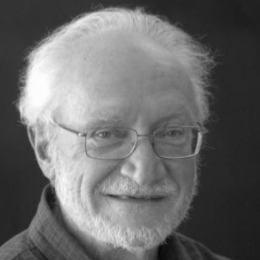
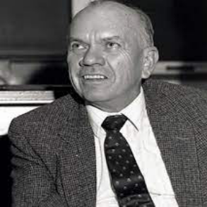
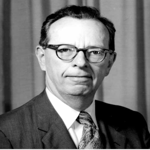
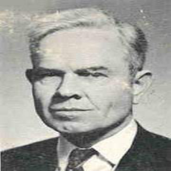
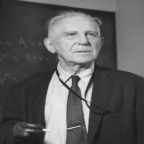
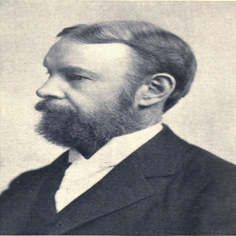

Somnath Basu is an Indian mathematician working in Algebraic topology, especially in string topology and rational homotopy theory. Currently, he is an associate professor at IISER Kolkata, India.
Dennis Parnell Sullivan is an American mathematician known for his significant contributions to algebraic topology. He is known for the rational homotopy theory. He was awarded the Abel Prize in 2022.

William Browder is an American mathematician, known for his work in algebraic and differential topology. He is known for developing the surgery theory method for classifying high-dimensional manifolds.

John Coleman Moore was a renowned American mathematician who made significant contributions to algebraic topology, including work on Borel-Moore homology and the Eilenberg-Moore spectral sequence.

George William Whitehead was a celebrated American mathematician known for his work in algebraic topology, including the invention of the J-homomorphism and his contributions to stable homotopy theory.

Norman Steenrod (Norman Earl Steenrod) was an American mathematician known for his significant contributions to algebraic topology, particularly his work on the Eilenberg-Steenrod axioms and Steenrod algebra. He is brilliant

Solomon Lefschetz was an American mathematician who did fundamental work on algebraic topology, its applications to algebraic geometry. He is credited with the development of the Lefschetz fixed point theorem.

William Edward Story was an English mathematician known for his contributions to algebraic geometry. He also made significant contributions to the theory of elliptic functions and modular forms.
You can find more information about my mathematical ancestors by clicking on this link.